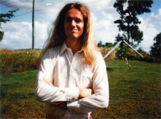
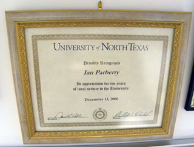
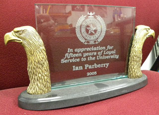
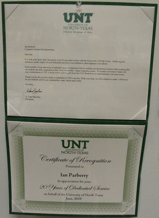
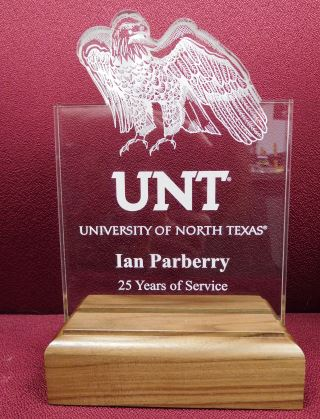

This page describes my academic employment, which began in 1979.
Before that I was employed from the age of 13
as a gas station attendant (back when there was no
such thing as self-service),
a pig-farmer's laborer (back when pig farmers would regularly collect the slops
from restaurants to feed the pigs, which was environmentally friendly but
highly unhealthy), and
an ironworker at a small engineering shop manufacturing overhead cranes.
Believe me, once I learned that instead of manual labor I could get an academic job
indoors in the air-conditioning,
there was no holding me back.

I got my first academic job in February 1979 as a Casual Tutor in the Department
of Computer Science at the University of Queensland in Brisbane, Australia.
"Casual Tutor" meant that I didn't have a contract, and "Tutor" means something
like a Teaching Assistant or TA in the US. I was at the start of the third year of a four-year
Bachelor of Science degree, but apparently they had an urgent need for instructors because
enrolment in Computer Science was going up exponentially (the Glory Years for CS).
I was dumped into teaching a lab section of Fortran for Engineers, in which I was
expected to lecture and set programming assignments. I'd like to think that
I did a good job, but I was young and callow. Fortunately nobody seemed to notice.
I was in this job for 2 years, from February 1979 to November 1980 (the academic year
in Australia is the same as the calendar year).
Somewhere in that two year period I was also
Tutor at St. John's College, a residential
college at the University of Queensland.
My job was
to tutor the Computer Science students who lived there.
I remember that we met in a pleasant wood-lined room that literally reeked of
wood polish and history.
There were usually only one or two students in attendance, so I was able to give
them individual attention. I remember a couple of Chinese girls in particular.
This was when communist China was first beginning to open up to the West,
so they were a highly novel presence on campus with their
drab utilitarian clothing and hairstyle, ubiquitous bicycles of ancient vintage,
and "I will try harder" mottos
scrawled in the margins of their notes like something out of a George Orwell novel.
In February 1981, after my graduation with a Bachelor of Science degree, I signed
up as a PhD student and I was promoted to Tutor Group 2, which means that I had a contract.
I remember being a lab TA for the beginning programming class in Pascal. One of the students
in that class was, I am pretty sure, my former 7th grade teacher and Queensland cricketer,
Ian Seib.
He didn't recognize me and I was too shy to approach him.
I remember carrying around the source code for the Pascal compiler used in that class (which was written
in Pascal) so that I could quickly answer even the most obscure question by looking at the code.
This was a large, heavy, 4-inch thick block of 15x10 inch tractor-fed paper.
There was one time when it was very useful. That was when I passed from
being just an ordinary geek to übergeek status.
A student brought me the following bug. He wanted to output the character "=", which would look
like this on a piece of paper:
=
While his code said was:
writeln("=");
What it output was this:
TRUE
Think about it for a second before I explain.
The first hint was that the student had obviously gotten the quote character wrong. In Pascal
the quote character is the single quote, which means that he should have written:
writeln('=');
That much was easy to spot.
At this point the student was pretty happy because he knew that with two keystrokes
he could fix his problem and get an A for his program, although
he was mildly curious as to why his code
output TRUE instead of getting a compile-time error.
TRUE is one of the things you get when printing a Boolean variable, but why do we see it here?
My geekhood was challenged. There were girls in the audience too. I thunked the compiler code onto the table.
Looking at the lexical analyzer, I quickly learned that the double-quote
character was used to start a number in hexadecimal. These days we would use
#FFFFFFFF in html or 0xFFFFFFFF in C for the hex version of the base-10 number 232-1, but that compiler wanted
was something like
"FFFFFFFF.
This was totally undocumented,
I wouldn't have found it out if I didn't have the source code for the compiler. Now I was
getting somewhere.
But again, it still should have given him a compile-time
error because there were no digits after the double-quotes.
There was clearly more to this than meets the eye.
Another quick dive into the code located the loop that input hexadecimal digits after
seeing the double-quotes character. Sure enough, it looked like this:
var num: integer;
c: char;
begin
read(c)
num := 0;
while c in ['0'..'9'] do
begin
num := num*10 + c - '0';
read(c)
end
end;
Got it. That while loop should have been a repeat loop. Since the character after the double-quotes
was not a digit, the compiler skipped the body of the while-loop and came out of it
with the variable num still having value zero. The compiler
was acting as if the code had said:
writeln("0="0);
That is, it was generated code for printing the Boolean
expression "Does hex zero equal hex zero?" Of course it printed TRUE.
Problem solved.
From July 1 to August 31, 1981 I worked as Les Goldschlager's Research Assistant,
during which time we did the research for the paper that was eventually published as
"On the Construction of Parallel Computers
from Various Bases of Boolean Functions"
.
I was really just marking my time in the PhD program at the University of Queensland
because I had a Commonwealth Scholarship to England that started at the beginning of
the academic year in England, which was October, 1981. That meant I was 9 months out of
phase. The Commonwealth Scholarship was a free ride, paying airfare, tuition, and a living allowance,
which meant that I didn't need to work.
Mike Paterson, my PhD adviser, needed to somebody to take over his Algorithms class
while he was on sabbatical. I served as a Teaching Assistant there in 1983, more to keep
my hand in teaching and to help out than for the money.
I distinguished myself by being the only student who tracked Mike down to his sabbatical
hiding place in the Mathematics Department at a satellite campus within walking distance.
He had carefully made sure that there were no signs, no announcements, and that nobody knew
his phone number. I naturally took that as a challenge.
After getting my PhD in May 1984 I started as a tenure-track Assistant Professor
at Penn State University in the US. The less said about that, the better.
I'm blocking those memories, but I do remember a female student named "Ariel Hacker",
who was blocked from class because some assistant thought that read "A Real Hacker".
I also remember teaching Graduate level Algorithms classes to 120 very smart students.
That was almost as challenging as the grading. The process of turning in final grades
was computerized, but in such a way that took more time, not less than doing it on paper.
Each grade had to be entered on a single mark-sense card. Every card had a box for the letter
grade, a place that had to be shaded in using the proper pencil (no coloring outside the lines),
and had to be signed in ink.
We pipelined the process to save time, reduce the tedium, and catch errors.
Three of us would sit together at a table.
One prof had the grade sheet and would hand write the grade in
the correct box on the card and put it on a pile for the next prof. The second prof would
grab a card from that pile and shade in the corresponding circle with the correct kind of pencil. The third prof would
be the instructor, who would busily sign the completed cards just as fast as he could.
After we had done my 120 cards, we would do those of the
other two profs. Sometimes we had a fourth prof who would do error-checking
as the cards came out at the end of the pipeline.
I've been at UNT since 1990.
After 10 years service they gave me this framed certificate. Well, OK, the certificate
is cheap and was printed in some administrative assistant's office,
but the frame is pretty nifty. They "Proudly appreciate me for 10 years of loyal service".

After 15 years of service they gave me this heavy and ornate trophy
made from etched glass.
It says it is "In appreciation for 15 years of loyal service". Hmmm. They're not proud of me any more.

After 20 years of service they gave me this chintzy certificate (not even fake
gold leaf) in a cheap and nasty plastic case.
OK, I get the point. You value me, but not enough to spend serious folding money. Message received.
It says "Certificate of Recognition... in appreciation for your 20 years of dedicated service."
They still appreciate me, but now I'm dedicated instead of being loyal.

After 25 years of service they upped their game by giving me
a perspex trophy. It's a far cry from the etched glass
of the 15 year trophy, but the base is a solid block of some exotic wood that has a strong aroma when scratched. Real wood, that's a nice touch.
It says "25 years of service" on it. There's no mention of me being either
dedicated or loyal, nor is there any indication that they might have appreciated it.
At least it's better than the certificate in the plastic binder that I got for
20 years of dedicated service.
